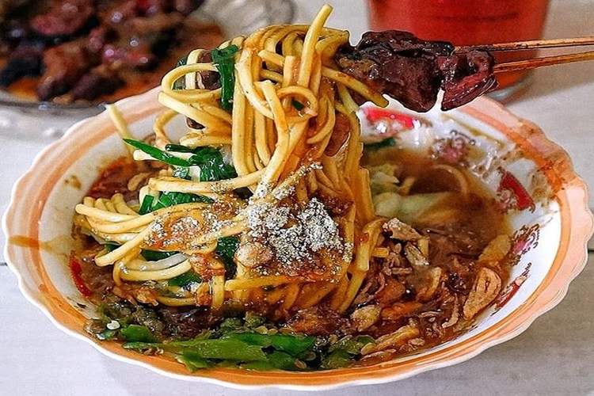

Tahu Gimbal

Garang Asem

Tofu dreadlocks is a typical food of the City of Semarang. This food consists of fried tofu, chopped raw cabbage, rice cake, bean sprouts, eggs, and dreadlocks (shrimp fried in flour) and mixed with a special peanut sauce because it uses shrimp paste. It's different from the peanut sauce for the Madiun pecel which is a bit thick. The peanut sauce for tofu dreadlocks is a little runny.
Garang Asem is a processed chicken dish cooked using banana leaves and dominated by a sour and spicy taste. Garang asem originates from Grobogan but now garang asem is popular in Kudus, even now Garang Asem in several cities in Central Java and DI Yogyakarta have this traditional food.
Ongklok noodles are boiled noodles typical of the city of Wonosobo and its surroundings. This boiled noodle is made using cabbage, chopped chives, and a thick, starchy gravy called loh. These noodles are widely sold in various stalls, restaurants, and sold around using carts in the city.